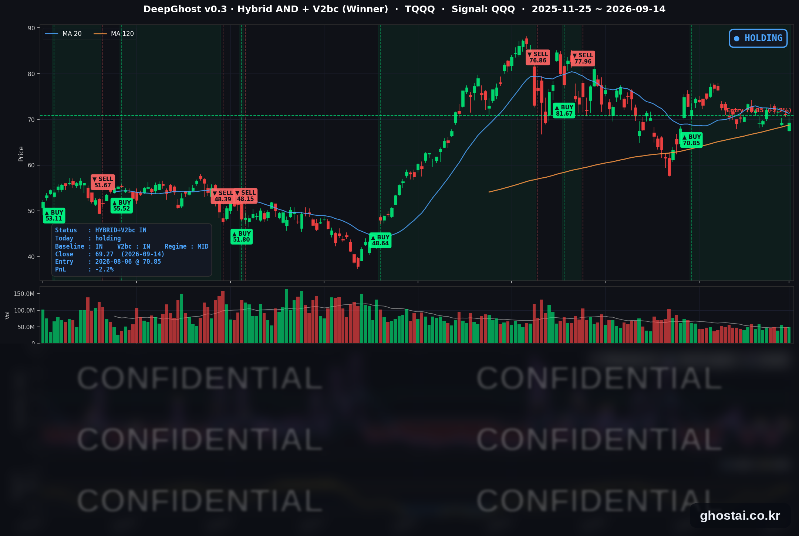

AI 속도 조절 논쟁
· Ghost.AI 데일리 리포트
👻 매일 시그널과 히스토리를 홈페이지에서 한눈에 → www.ghostai.co.kr
회원 페이지 안내 — 회원 가입하시면 커버리지 전 종목의 원본 시그널과 분석 레포트를 매일 확인하실 수 있습니다. 회원 페이지는 블로그·유튜브보다 먼저 업데이트됩니다. 선착순 100명을 모집하고 있으며, 이메일과 필명만으로 가입하실 수 있고 서비스 사용료는 받지 않습니다. 가입 신청 후 운영자 승인을 거쳐 이용하실 수 있습니다.
주말에 나온 'AI 개발 속도를 늦추자'는 제안이 데이터센터 관련 종목을 한꺼번에 끌어내렸습니다. 다만 S&P 500 종목의 절반 이상은 올랐습니다. 시장 전체가 빠진건 아니고, 반도체에 매도가 몰렸습니다. 우리 모델은 아직 하락 전조 시그널을 감지하지 못해서 보유를 유지하고 있습니다.
📊 오늘의 매매 신호
| 항목 | 내용 |
|---|---|
| 오늘 할 일 | ✅ 아무것도 안 해도 됩니다 |
| 포지션 상태 | 📈 TQQQ 보유 중 (IN POSITION) |
| 매수 진입일 | 2026-08-06 (27거래일째) |
| 진입가 → 현재가 | $70.85 → $69.27 |
| 현재 포지션 수익 | -2.23% |
TQQQ 시그널 — IN POSITION
현재 상태: 매수 포지션 유지 중 | 이번 포지션 수익률 -2.23%

나스닥100(QQQ)이 -0.80%, TQQQ는 -2.41% 내려 69.27달러로 마감했습니다. 전략의 평가손익은 전 거래일 +0.18%에서 -2.23%로 다시 마이너스가 됐습니다. 8월 6일 진입 이후 오늘로 27거래일째 보유이고, 그중 평가손익이 마이너스였던 날은 8일, 가장 깊었던 날은 8월 24일의 -2.60%였습니다. 오늘은 그 다음으로 깊은 축에 들지만 최저치는 아닙니다.
하락분은 개장 전에 만들어졌고, 장중에는 절반 넘게 되돌렸습니다. QQQ는 전 거래일 종가 대비 -1.62%로 열린 뒤 정규장에서 +0.84% 회복했고, TQQQ도 갭 -4.86% 뒤 정규장 +2.58%였습니다. 주말에 나온 뉴스가 시가에 한 번에 반영된 뒤, 장이 열리고 나서는 반대 방향으로 움직인 하루입니다.
오늘 미국 시장 — 시황 요약
지수 마감
| 지수 | 종가 | 등락률 |
|---|---|---|
| S&P 500 | 7,619.98 | -0.48% |
| 나스닥 종합 | 26,186.41 | -0.56% |
| 다우존스 | 52,421.20 | -0.29% |
| 러셀 2000 | 2,892.24 | -0.40% |
| QQQ (나스닥100) | 709.18 | -0.80% |
| TQQQ | 69.27 | -2.41% |
네 지수가 모두 내렸지만 폭은 0.3-0.6%로 크지 않았습니다. 지수 숫자보다 그 아래 구성이 훨씬 중요했던 날입니다 — S&P 500 종목 501개 중 278개가 올랐고 중앙값은 +0.24%였습니다. 오른 종목이 더 많은데도 지수가 내린 것은 하락이 시가총액 큰 AI 인프라 관련 종목에 몰렸기 때문입니다.
장중 흐름도 갈렸습니다. 나스닥 종합은 시가 -1.19%로 출발해 종가까지 +0.65%를 되돌렸고, QQQ는 -1.62%로 출발해 +0.84%를 회복했습니다. 반대로 다우는 +0.34%로 올라 출발했다가 장중 -0.62% 밀려 마감했습니다.
국채 금리 동향
| 만기 | 수익률 | 전 거래일 대비 |
|---|---|---|
| 3개월 | 3.935% | +2.2bp |
| 5년 | 4.790% | -0.1bp |
| 10년 | 4.961% | -1.4bp |
| 30년 | 5.329% | -2.5bp |
앞단만 오른 평탄화입니다. 3개월물이 +2.2bp 올라 내일부터 열리는 FOMC의 인상 기대를 그대로 반영한 반면, 5년 이상은 전부 내렸습니다. 장단기 스프레드(10년−3개월)는 102.6bp로 3.6bp, 30년−10년은 36.8bp로 1.1bp 좁아졌습니다. 둘 다 역전이 아닌 정상 구간이지만 커브 전체가 평탄해졌습니다.
앞단이 오르고 장기물이 내리는 조합은 "한 번 더 올리되 그 뒤 경로는 낮다"는 그림에 가깝습니다. 8월 근원 소비자물가가 예상을 웃돈 뒤에도 장기물이 따라 오르지 않는다는 점은, 채권 시장이 이번 인상을 물가 대응의 마지막 구간으로 보고 있음을 시사합니다.
한편 이날 주식의 동인은 금리가 아니었습니다. 장기 금리가 내렸는데도 나스닥이 약세였고, 할인율에 가장 민감할 소프트웨어가 오히려 크게 올랐습니다. 금리는 배경이었고 전면에 있던 것은 AI 관련 뉴스였습니다.
연준 발언 & 금리 패스
FOMC 블랙아웃 기간이라 9월 14일 위원 발언은 없었습니다. 9월 5일부터 17일까지 적용되는 구간이라 공식 발언이 나오지 않았고, 이날 금리 기대의 변화는 지표와 선물 가격만으로 움직였습니다.
시장이 예측은 인상입니다. 현재 정책금리는 3.50-3.75%이고, 9월 25bp 인상 확률은 직전 거래일 시점의 60%대에서 80% 중후반까지 올라왔습니다. 3.75~4.00%로의 인상이 시장의 기본 시나리오입니다. FOMC는 9월 15-16일에 열리고, 16일 오후 2시(동부시간)에 결정과 경제전망요약(SEP, 점도표)이 함께 나온 뒤 2시 30분 기자회견이 이어집니다. 인상 자체는 상당 부분 가격에 들어가 있어, 변동성은 결정보다 점도표가 그리는 이후 경로에서 나올 가능성이 큽니다.
오늘의 핵심 이슈
-
AI 개발 속도를 늦추자는 제안이 AI 인프라 관련 종목을 직격했습니다. 9월 12일 토요일 Anthropic CEO Dario Amodei가 모델 능력 향상 속도를 의도적으로 조절하자는 에세이를 냈고, OpenAI의 Sam Altman과 xAI의 Elon Musk가 공개적으로 동의했습니다. 주말 소식이라 월요일 시가부터 반영됐습니다. 타격은 반도체에 그치지 않고 데이터센터 건설 체인 전체로 번졌습니다 — 광통신 관련업종이 평균 -11.23%(GLW -13.70%), 반도체 장비가 -8.77%(TER -13.30%), 전력·전기설비가 -6.62%, 서버·네트워크 장비가 -6.39%였습니다. 장비 업체 낙폭이 가장 컸던 것은 이들의 매출이 이미 출하된 칩이 아니라 앞으로 지을 설비 계획에 걸려 있어, 투자 속도 조절 논의에 가장 먼저 노출되기 때문입니다.
-
같은 뉴스가 소프트웨어에는 정반대로 작용했습니다. 인프라가 내리는 동안 보안·소프트웨어는 평균 +8.77%(CRWD +13.85%, PANW +13.09%), IT 서비스·데이터는 +6.29% 올랐습니다. 지난 2년간 AI가 대체할 것으로 지목돼 눌려 있던 종목들이, 개발 속도가 늦춰지면 그만큼 시간을 번다는 계산에 급반등한 것입니다. 두 진영의 격차는 하루 만에 17%포인트 수준으로 벌어졌습니다. 다만 하이퍼스케일러가 실제로 설비 투자 계획을 낮춘 사실은 확인되지 않았습니다. 오늘 벌어진 격차는 어디까지나 기대의 변화이고, 그런 이유로 벌어진 간격은 되돌림도 빠를 수 있습니다.
-
FOMC 직전 거래일의 금리 커브는 인상 쪽에 서 있습니다. 3개월물이 3.935%로 +2.2bp 오른 반면 10년물은 -1.4bp, 30년물은 -2.5bp 내렸습니다. 정책금리가 3.50~3.75%인 지금 시장이 보는 것은 인하가 아니라 인상이며, 결정은 9월 16일 오후 2시(동부시간)에 점도표와 함께 나옵니다. VIX가 7.95% 오른 것도 이 이벤트를 앞둔 헤지 수요로 볼 수 있습니다.
변동성 & 투자심리
VIX는 17.10(+7.95%)으로 올라 9월 10일 기록한 17.84에 다시 근접했습니다. 절대 수준은 여전히 20 아래로, 경계는 높아졌지만 공포 국면은 아닙니다.
공포탐욕지수는 31-33의 공포 구간에 머물렀습니다. 직전 거래일 33에서 큰 변화가 없었습니다.
정리하면 중립입니다. 지수 하락 폭이 작고 오른 종목 수가 더 많았다는 점에서 시장 전반이 위험을 줄인 날은 아니었습니다. 다만 VIX 상승과 공포 구간의 심리 지표는 FOMC를 앞둔 경계심을 보여줍니다. 이날의 매도는 시장 전체가 아니라 AI 설비 투자라는 하나의 테마에 집중됐습니다.
매크로 & 원자재
| 품목 | 종가 | 등락률 |
|---|---|---|
| WTI 원유 | $101.89 | +1.84% |
| Brent 원유 | $106.15 | +1.47% |
| 금 선물 | $4,340.00 | -1.56% |
| 금 ETF (GLD) | $392.84 | -1.49% |
| 원유 ETF (USO) | $156.66 | +1.14% |
유가가 직전 거래일의 되돌림을 다시 만회했습니다. 사우디의 East-West 파이프라인이 이라크 방면 공격 이후 폐쇄되면서 홍해 방면 물량이 묶였고, 걸프협력회의(GCC)와 이란의 공급 재개 논의는 이란 측이 연기했습니다.
금은 이틀 만에 다시 내려 최근 20거래일 고점(8월 24일 $4,640.80) 대비 6.48% 낮은 수준입니다. 유가가 오르는 동안 금이 내린 것은, 이날 위험 회피가 매크로 전반이 아니라 AI 관련 종목에 한정됐다는 점과 맞물립니다.
주요 종목 동향
| 종목 | 종가 | 등락률 | 비고 |
|---|---|---|---|
| INTC | 97.19 | -5.59% | 시가 -7.01% 후 장중 +1.54% 회복 |
| MU | 924.03 | -5.25% | 시가 -7.02% 후 장중 +1.91% 회복 |
| AVGO | 344.72 | -4.77% | 장중 반등 없이 저가권 마감 |
| NVDA | 210.96 | -3.36% | AI 반도체 중 상대적으로 낙폭 작음 |
| TSLA | 358.97 | -1.77% | |
| AMZN | 253.54 | -1.26% | 대형주 중 약세, 데이터센터 투자 노출 |
| QCOM | 180.15 | -1.00% | 시가 -6.15% → 장중 +5.49%, 낙폭 대부분 회복 |
| AAPL | 333.08 | +0.24% | 하루 등락 폭이 크지 않았음 |
| MSFT | 505.41 | +1.97% | 소프트웨어 강세에 동행 |
| META | 665.60 | +2.71% | |
| GOOGL | 349.39 | +3.22% | 대형주 중 최대 상승 |
| NFLX | 80.32 | +3.77% | AI 설비 투자 노출이 낮은 대형 기술주 |
커버리지 12종목이 9.4%포인트 범위에 퍼졌습니다. 반도체 4종목(INTC·MU·AVGO·NVDA)이 모두 3% 넘게 내린 반면, 소프트웨어·플랫폼 성격이 강한 5종목(AAPL·MSFT·META·GOOGL·NFLX)은 모두 올랐습니다. 이날의 구분선은 전통적인 섹터가 아니라 "AI 설비 투자에 매출이 걸려 있는가"였고, 같은 커버리지 안에서도 그대로 적용됐습니다.
QCOM은 시가 -6.15%에서 종가 -1.00%까지 되돌렸습니다. 반도체 중에서도 스마트폰 비중이 큰 종목은 데이터센터 설비 투자 논쟁의 직접 대상이 아니라는 판단이 장중에 반영된 것으로 보입니다.
다음 거래일 일정
- 9월 15일(화) FOMC 1일차 — 회의가 시작되지만 이날 발표는 없습니다. 블랙아웃도 이어져 연준 인사의 발언은 나오지 않습니다.
- 9월 16일(수) FOMC 결정 + SEP — 오후 2시(동부시간) 금리 결정과 점도표, 2시 30분 기자회견. 현재 금리 3.50~3.75%에서 25bp 인상 쪽으로 시장이 기울어 있고, 관전 포인트는 인상 여부보다 점도표가 제시하는 이후 경로입니다.
- AI 속도 조절 논의의 후속 — 하이퍼스케일러(MSFT·GOOGL·META·AMZN)에서 설비 투자 계획 관련 언급이 나오는지가 이번 로테이션의 지속 여부를 가릅니다.
Ghost.AI — Quantitative AI Investment
Model: DeepGhost v0.3 | Transformer-Based Deep Learning
Coverage: 13 tickers | Updated every trading day after US market close
⚠️ 본 자료는 정보 제공 목적으로만 작성되었으며 투자 권유가 아닙니다. 모든 투자의 책임은 투자자 본인에게 있습니다. 과거 성과가 미래 수익을 보장하지 않습니다.
[유의사항]
- 본 서비스는 불특정 다수를 대상으로 발행되는 단방향 정보 제공 서비스이며, 투자자 개인의 재산 상황·투자 목적·위험 선호도를 반영한 개별 투자 조언이 아닙니다.
- 고스트에이아이 주식회사는 고객과 쌍방향 의사소통(개별 상담, 맞춤형 자문 등)을 제공하지 않습니다.
- 본 콘텐츠는 투자 권유 또는 매매 주문의 청약·청약의 권유에 해당하지 않으며, 최종 투자 판단 및 그에 따른 손익의 책임은 전적으로 투자자 본인에게 있습니다.
고스트에이아이 주식회사